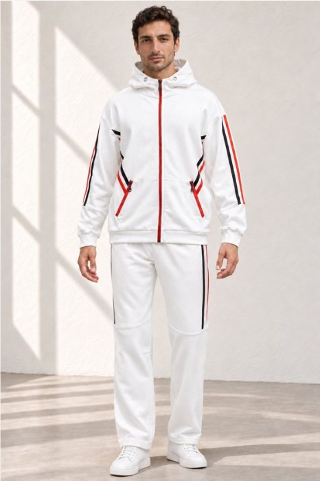

Marka iş birliği
QUINZELL
Askıdan sahneye.

- Amaç ve fikir
- Bir ürün fotoğrafından ne kadar ileri gidilebilir? Quinzell’in hayalet model fotoğraflarından yola çıkarak model üzerinde görseller ve renk alternatifleri hazırladık. Aynı ürünleri farklı renk ve sahnelerde ele alan çalışma, ekibin üretim öncesinde seçenekleri değerlendirmesine de alan açtı.
- MON’un üstlendiği işler
- Model giydirme, renk çalışması ve video üretimi tek süreçte ilerledi. Ekip, renk alternatiflerini model üzerinde görerek üretim kararlarını değerlendirebiliyor.
- Üretilen çıktılar ve formatlar
- Model üzerinde ürün görselleri, kampanya görselleri ve 17 saniyelik reklam filmi. Format: dikey.
- Statü
- Quinzell ile marka iş birliği kapsamında hazırlandı.
Aynı ürün, önce mankende, sonra model üzerinde: önden ve arkadan.


Kaynak fotoğraflar değiştirilmedi.